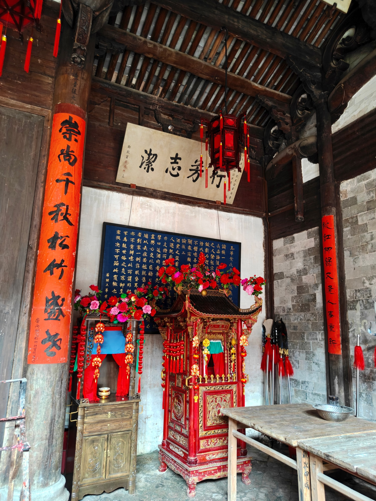
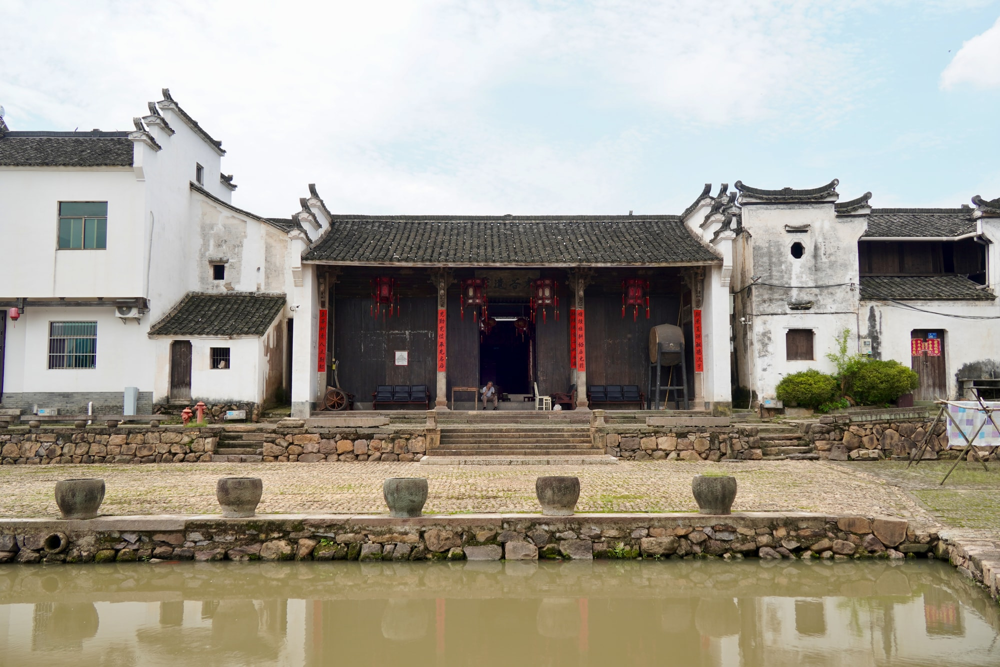

国保宗祠建筑
深堂庄重，气度森然崇仁堂
崇仁堂坐落在新叶村中央的高地上，是叶氏一个房派的大祠堂，也是村中规模较大的宗祠之一。它在古村宗祠群中具有鲜明而独立的位置。
01
从村外迁入的祠堂
崇仁堂原先并不在此。明代后期，它由村子外围迁建到村中现址；如今所见的建筑，又在清光绪六年（1880年）经过一次重修。数百年间几经修葺，它始终是叶氏这一房族人聚合、议事的中心。
02
门楼之后的深院

厚重的门楼之后，木构门罩连接着一进接一进的院落，厅堂、天井和廊庑沿中轴逐层深入。开阔的空间与连续的木构共同形成大祠堂特有的纵深，也让人在行进中感受到礼仪空间由外向内的层层展开。
03
执行家法的厅堂

崇仁堂也承担执行家法、族规的功能。高敞的厅堂里，粗壮木柱撑起深长空间，梁架与陈设共同形成肃穆氛围。这样的功能说明，宗祠不仅用于祭祀，也曾是房派内部维系秩序的公共场所。
04
堂前的半月塘

崇仁堂迁到村中时，特意在堂前挖出一方半月形的水塘，又在近旁种下梅园。祠堂正面隔水而立，白墙灰瓦倒映在水面上，既合于古村讲究的山水格局，也为这座大祠堂添了一份清幽。